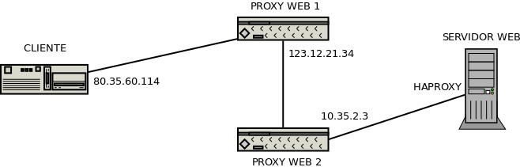

7.2.2.2.10. Otros aspectos¶
7.2.2.2.10.1. Definición mediante mapeo¶
Si requerimos definir una variable dependiendo del valor de otra, disponemos de la directiva map:
map $host $dominio {
hostnames;
default "desconocido";
*.example.net "example";
*.dominio.org "dominio";
~[^.]+\.otro\.[^.]+ "otro";
}
En este caso, se define la variable $dominio a partir de los valores de la
variable $host. Se comprueba si el valor de esta última concuerda con
alguna entrada de la izquierda y, si es así, se asigna el valor de la columna
derecha correspondiente. Si no hay concordancia, se usa la entrada default.
Además, se puede incluir la palabra hostnames para expresar que lo
contenido son nombres de máquina y que se entienda la notación con asterisco.
Si la lista es larga, puede usarse include:
map $host $dominio {
hostnames;
include dominios.txt;
}
y en el fichero /etc/nginx/dominios.txt escribir la lista de dos
columnas.
Dado que el módulo ngx_http_referer no está incluido
en el ejecutable que viene en el paquete nginx-light y el paquete no es
instalable de forma separada, podríamos emular medianamente el comportamiento de
$invalid_referer del siguiente modo:
map $http_referer $invalid_referer {
default 1;
# Dominios para los que se permite se considera válido el referer.
"~www.example.net" 0;
"~example.net" 0;
}
7.2.2.2.10.2. Compresión¶
Es muy reomendable, para ahorrar ancho de banda configurar el servidor para que
comprima aquellos ficheros cuyp ratio de compresión es alto. La configuración
predeterminada sólo comprime los documentos HTML, así que creamos un fichero
de configuración adicional como
/etc/nginx/conf.d/gzip.conf:
# Configuración de la compresión
gzip_comp_level 6;
gzip_static on;
gzip_vary on;
gzip_http_version 1.1;
gzip_min_length 1024;
gzip_types text/plain text/css text/xml text/javascript image/svg+xml
application/json application/javascript application/xhtml+xml application/xml+rss;
7.2.2.2.10.3. Depuración¶
Es obvio que depurar el funcionamiento del servidor pasa por mirar los ficheros
de registro. Sin embargo, si realizamos en la configuración reescrituras
internas, podremos comprobar que estas no dejan rastro en los
logs, ya que su registro está deshabilitado. Para habilitarlo podemos añadir
fichero /etc/nginx/conf.d/rewrite.conf:
# cat > /etc/nginx/conf.d/rewrite.conf
rewrite_log on;
pero esto no es suficiente, ya que se registran en el registro de errores con
nivel notice, mientras que el nivel predeterminado es error.
Consecuentemente, habrá que retocar la directiva error_log que corresponda
para cambiar el nivel. Por ejemplo:
error_log /var/log/nginx/error.log notice;
7.2.2.2.10.4. Servicio tras proxy¶
Cuando un proxy inverso intermedia interceptando la comunicación entre clientes y servidor, puede actuar de modo transparente (en cuyo caso nuestro nginx será incapaz de reconocerlo) o no. Es en este segundo caso en el que el el proxy web inverso produce distorsiones en la comunicación que debemos tener en cuenta al configurar el servidor web:
El proxy captura la petición del cliente y la reproduce hacia el servidor lo que supone que a comunicación que recibe el servidor no proceda del cliente original, sino del proxy.
Puede darse el caso de que en las comunicaciones cifradas, el extremo de cifrado se traslade del servidor al proxy, a fin de que este entienda la comunicación HTTP y pueda hacer el trabajo que tenga encomendado (cacheo, balanceo, etc.). EN ese caso, el servidor recibirá una conexión no segura, pero es conveniente que sepa que originariamente era segura.
Tenga presente que tratar estas cabeceras en el servidor, no es sólo necesario
para el correcto funcionakiento del servidor, sino también para el correcto
funcionamiento de las aplicaciones que éste ejecute. Por ejemplo, las
aplicaciones escritas en PHP consultan la dirección remota a través de
$_SERVER["ADDRESS"] y si está activo el protocolo seguro a través de
$_SERVER["HTTPS"]. Por tanto, configurar bien el servidor para que ejecute
aplicaciones PHP implica que ambos parámetros que pasa el servidor web al
intérprete tengan los valores adecuados.
7.2.2.2.10.4.1. Cliente original¶
Un proxy intermedio que no que no actúe de forma transparente, hará creer al servidor web que todas las peticiones las recibe de él. En consecuencia, cualquier decisión que queramos tomar en función de quién sea quien nos haga la petición (p.e. si la petición es de un cliente local o uno remoto), será imposible.
Para soslayar este inconveniente los proxies pueblan la cabecera X-Forwarded-For, de manera que el servidor pueda recalcular la dirección qye identifica al cliente original y definir la variable $remote_addr, en vez de usar la IP de la conexióni (que será la del proxy). Para que nginx sea capaz de aprovechar la información de esta cabecera puede crearse un fichero con contenido semejante a éste que aprovecha el módulo ngx_http_realip_module:
# /etc/nginx/conf.d/realip.conf
set_real_ip_from 127.0.0.1;
set_real_ip_from 10.0.0.0/8;
real_ip_recursive on;
real_ip_header X-Forwarded-For;
La directiva real_ip_header
permite indicar cuál es el nombre del campo a analizar, set_real_ip_from
las redes y máquinas en que consideramos que hay proxies que alteran la ip
original y que queremos ignorar; y real_ip_recursive
provoca a off que consideremos la ip del cliente la última contenida en
X-Forwarded-For (siempre que la $remote_addr coincida con alguna de
las referidas en set_real_ip_from); y a on, que la ip del cliente sea
la última de X-Forwarded-For que tampoco coincida con las referidas en
set_real_ip_from.
Para ilustrarlo supongamos este esquema:
que genera la siguiente cabecera X-Forwarded-For:
X-Forwarded-For: 80.35.60.114 123.12.21.34 10.35.2.3
y un $remote_address original que vale 127.0.0.1, ya que el proxy que
recibe la comunicación en nuestro servidor (haproxy) se comunica con
nginx a través de la interfaz de loopback. En este caso, y con la
configuración anterior en conf.d/realip.conf:
Si
real_ip_recursiveestá deshabilitado,$remote_addressacabará valiendo 10.35.2.3, o sea, la última ip deX-Forwarded-For.En caso contrario,
$remote_addressvaldrá 123.12.21.34 ya que éste es el último valor deX-Forwarded-Forque no está incluido en las directivasset_real_ip_from.
7.2.2.2.10.4.2. Protocolo original¶
Para que el proxy declare el protocolo (HTTPs) con el que recibió la petición se suele usar otra cabecera, X-Forwarded-Proto, con valor https si el protocolo original era HTTPs. Para tenerlo en cuenta en nuestro servidor podemos incluir esta configuración:
# /etc/nginx/conf.d/https.conf
map $http_x_forwarded_proto $_https {
default $https;
https on;
}
que permite conocer la naturalza original del protocolo usando la variable de usuario $_https en vez de la original $https. Ahora, basta con usar $_https allí donde usábamos antes $https:
server {
listen 80;
server_name _;
root /srv/www;
try_files $uri $uri/ =404;
# Necesario si queremos redirigir el tráfico seguro a no seguro
if ($_https != "on") {
return 301 https://$host$uri$is_args$args;
}
}
Además, si el sitio es dinámico y usa PHP, debemos hacérselo al intérprete añadiendo otro bloque a la configuración:
location ~ \.php$ {
include snippets/fastcgi-php.conf;
fastcgi_param HTTPS $_https if_not_empty;
fastcgi_pass php;
}